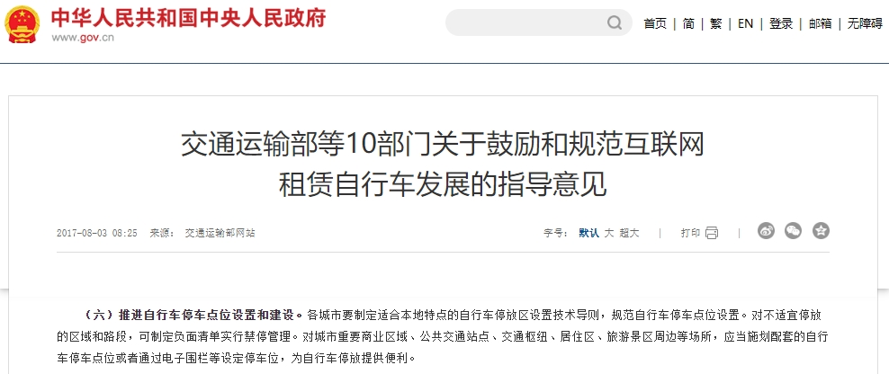

研究背景与动机
-
社会问题现状
政府治理需求升级
根据《交通运输部等10部门关于鼓励和规范互联网租赁自行车发展的指导意见》显示：
“推进自行车停车点位设置和建设。各城市要制定适合本地特点的自行车停放区设置技术导则，规范自行车停车点位设置。对不适宜停放的区域和路段，可制定负面清单实行禁停管理。对城市重要商业区域、公共交通站点、交通枢纽、居住区、旅游景区周边等场所，应当施划配套的自行车停车点位或者通过电子围栏等设定停车位，为自行车停放提供便利。”

政策收紧：45个重点城市已出台"电子围栏+视觉校验"双合规政策（2021年仅12城）
经济杠杆强化：北京/上海将违规停放罚款提升至200-500元/次（较2022年增长4-10倍）
成本转嫁机制：深圳试点要求企业承担30%运维人力成本（日均巡查成本3000元/
共享车辆管理困境
当前两轮电动车（电单车）停放存在人工监管成本高（依赖路面巡查）、停车区域划分模糊、用户合规意识不足等问题，导致：
用户端：因违规停车频繁产生罚款，体验差
管理端：城市秩序维护效率低下（需投入大量人力物力）
技术局限性：现有解决方案多依赖物理改造（如路面标识施工）或简单传感器，缺乏低成本、高泛化性的智能判断手段。
-
项目核心动机
通过视觉大模型+机器视觉技术，实现：
用户需求：
在传统GPS定位还车失效情况下，提供替代视觉替代解决方案
实时、直观的停车引导（如拍照即时反馈）
降低因不规范停车导致的纠纷与罚款
管理需求：
满足政府对停车角度规范要求
减少人工巡查成本（目标替代99%人力判断）
通过数据驱动优化停车区域规划
-
技术可行性验证
模型能力：所选视觉大模型（如LLaVA、MiniCPM-V等）在物体检测、空间关系理解任务中已具备：
高精度角度识别（误差≤10°）
关键点距离检测（误差±5cm）
多模态交互能力（结合用户拍照与规则库）
落地优势：
无需大规模路面改造，仅需移动设备摄像头
通过F1-score ≥0.9的算法指标平衡误报与漏报
-
预期社会价值对比
成本
传统：人工巡查+施工（高成本）
本方案：算法+现有设备（低成本）
效率
传统：周期巡查（滞后）
本方案：实时检测（秒级反馈）
公平性
传统：主观判断
本方案：标准化规则